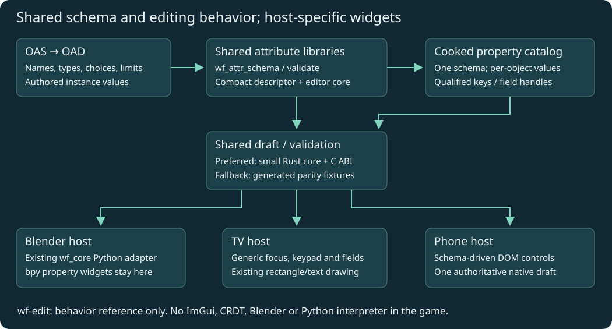
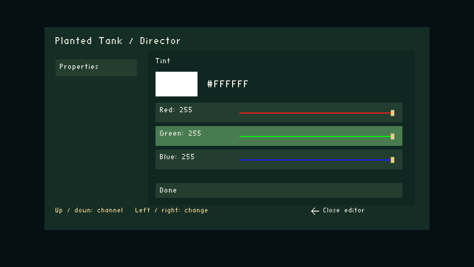
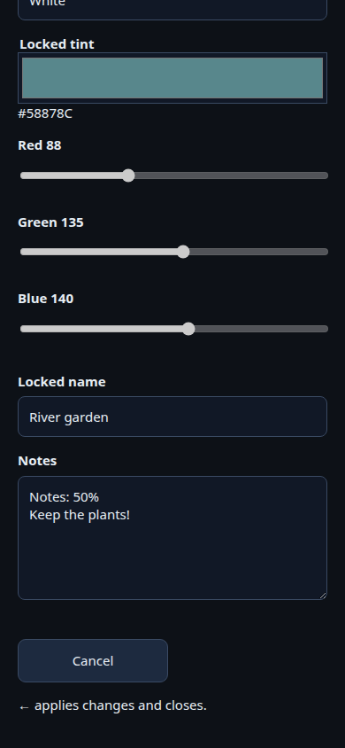
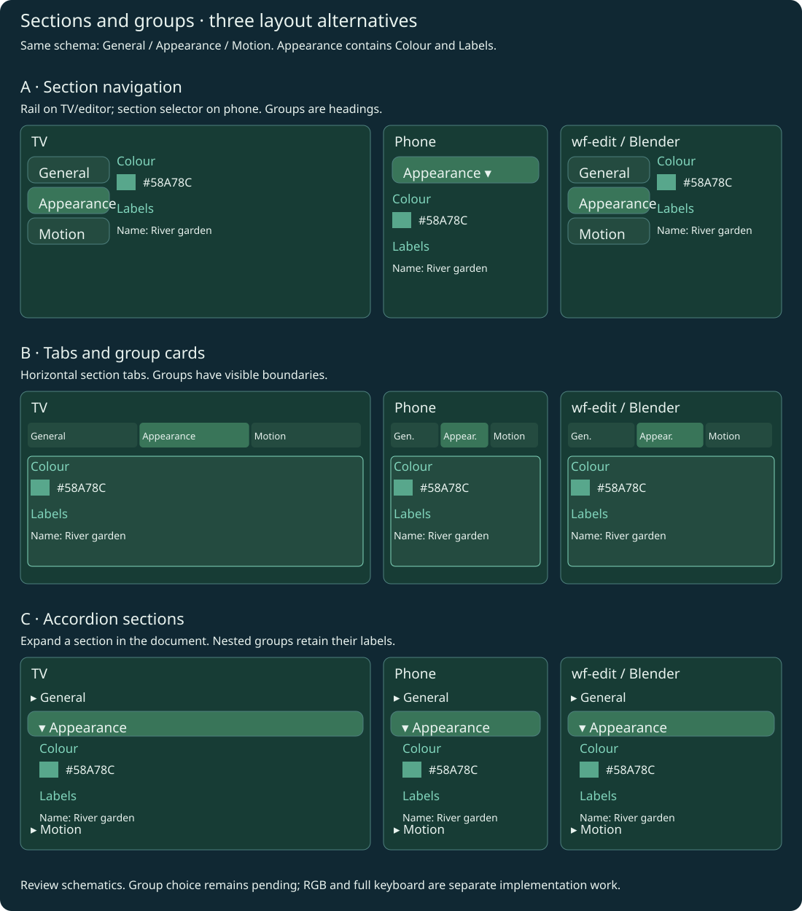
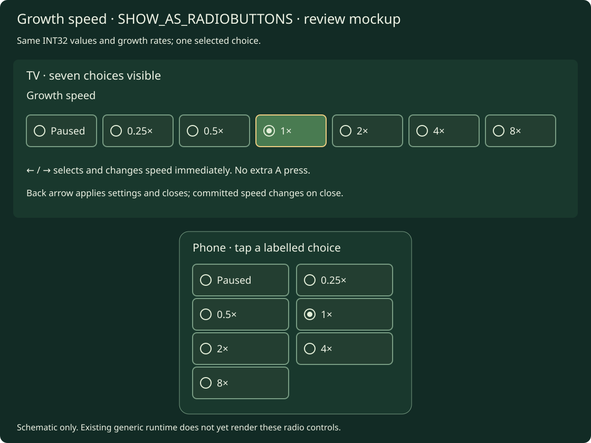
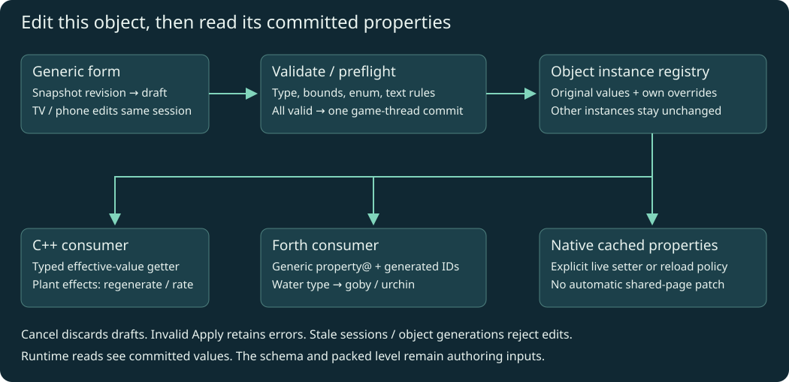
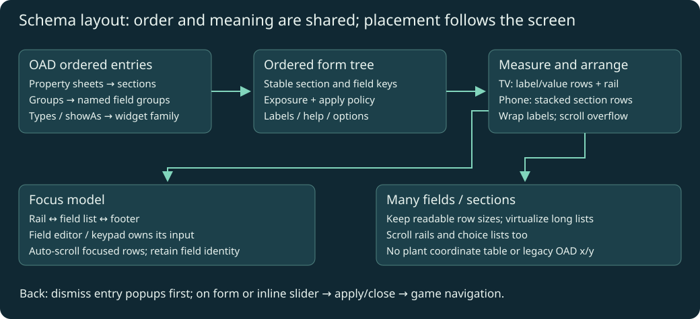
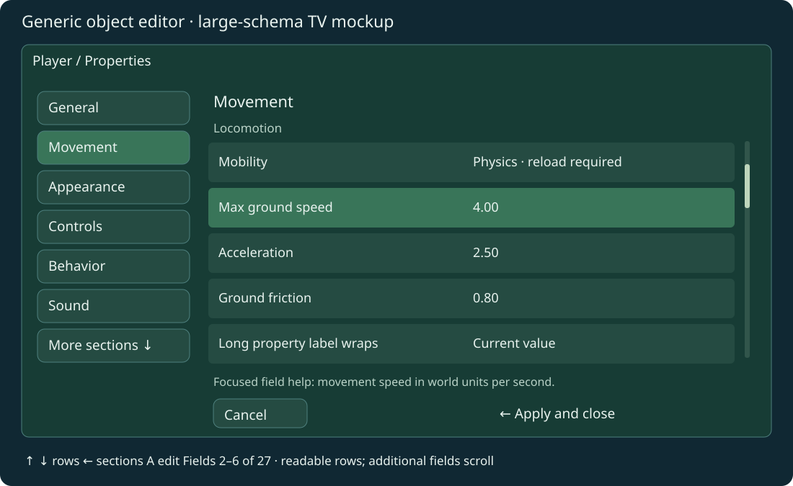
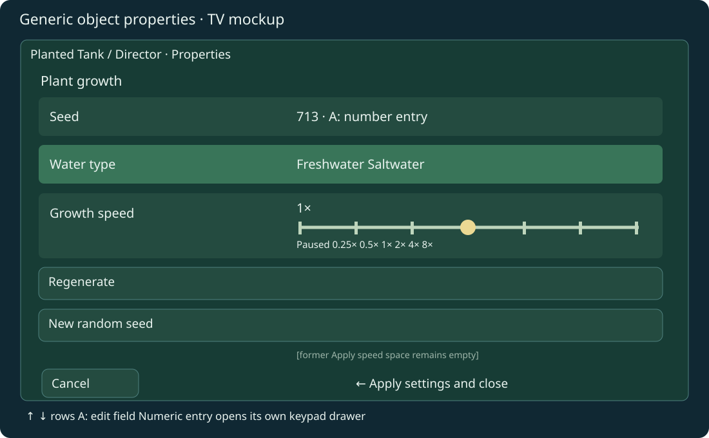
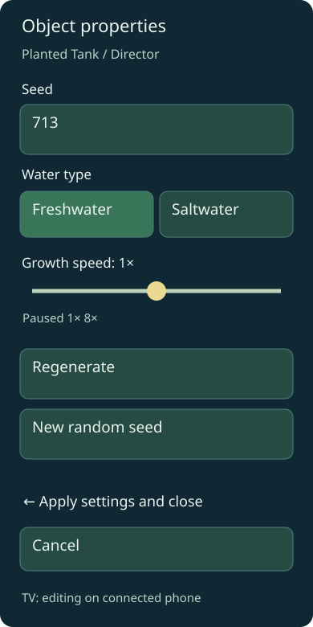

6 October 2026 · Implementation authorized and in progress.
Will permits minimal core changes for this approach, with their scope described.
This plan replaces the plant level's custom settings form with an object
property editor driven by OAS/OAD. Runtime code then reads the same edited
properties. It supersedes the proposed plant-specific plant-state syscall.
Do not pull wf-edit into the runtime. Use it as an implementation reference;
share small schema/editing components where that is practical.
Select an object with an attached OAD schema, inspect its current properties, edit eligible values on the TV or connected phone, and apply a validated change to that object. Forth and C++ read those effective instance values through one generic API. Other objects sharing the same original OAD blocks stay unchanged.
The first production object is Planted Tank settings, attached to the tank's Director (or another explicitly authored settings owner), not a process-global anonymous form. Its Water type, Seed and Growth speed come from an attached supplemental OAS/OAD schema. This does not require inventing a native actor class or adding game-specific fields to every actor's common block.
Edit instance values defined by OAS/OAD. The running game does not rewrite
the .oas source or mutate the .oad schema's field definitions/ranges. Source
files and packed level data remain authoring inputs; runtime changes are an
instance overlay. Session-only edits are the initial default. Persisting/exporting
overrides is a separate explicit action, not an automatic write to the repository.

Each level can own its schemas under wflevels/<level>/. For example,
wflevels/aquarium_plants/settings.oas defines the planted tank settings;
its compiled OAD is normalized into that level's property catalog. Level-wide
settings belong to an explicitly authored object such as the Director. Actor
schemas may also be local to a level or reused between levels. No global actor
schema changes are required for these supplemental properties.
INDEXOF_ROTATION_A/B/C names.
Player scripts also omit Director-only contact/spine definitions. Tests now
compile both actual exported scripts within the same dictionary in float and
fixed-point configurations; the ten goby checks pass.J-986002bc14ed, APK SHA-256
7bc63a1c8af8619a3e6e7faa2d3c5a7c8ec03b6513204bd39d31be32d187c533.
The captured screen shows the freshwater goby, growing plants and seed HUD;
the runtime failure check passed. Evidence is under
verified-launch.
This resolves the observed black screen; matched profiling and full device
settings/mode-switch validation remain outstanding.J-31cfa0e8c8f3 passed keypad navigation, both back-arrow
steps, phone apply/cancel, invalid seed rejection, reconnect, stale-session
rejection and freshwater/saltwater regeneration. The goby settles on the new
central grazing rock. Assertions and captures
are saved. The run stopped at held-left movement; it is not a complete pass.
The validator used a 650 ms hold while position telemetry arrives every 30
physics ticks, allowing stale samples. The revised validator uses 3000 ms,
requires a fresh sample and saves movement measurements even on failure.
Eight coordinator regression tests pass. Deployment and a device rerun are
pending; movement, release, Home/resume and selector exit remain unverified
by this run. No engine code was changed for this test correction.J-bafa5af55376 passed all four directions with fresh samples,
released-input settling and Home/resume in the same process. Settings checks
passed again. Movement measurements
are saved. Final exit failed because the validator omitted a back-arrow step:
resume reopened the phone-controller prompt, so navigation requires prompt
dismissal → selector → exit. The resumed and following captures confirm prompt
dismissal leaves gameplay visible. The validator now includes all three steps;
its deployment and final exit verification are pending. This run is not a
complete pass; no navigation behavior was changed.plant_checks.py. Concurrent
diagnostics changes to shared service.py/workflows.py caused the original
source-hash check to stop before deployment. The existing deployed service
already supports the plant validator. Both deployed/source hashes for the
single-file review are verified, and eight coordinator regression tests pass.J-9ae18edfc74a completed successfully with cleanup verified.
All 26 assertions pass, including settings, all four held directions with
fresh samples, release settling, Home/resume and exit from the selector.
The selector screenshot was reviewed and shows Planted Tank selected after
returning from gameplay. Evidence: assertions,
movement,
selector,
receipt.
Tested ordinary APK SHA-256:
d82effba1e31696601185982a39c97461a89a84229ac073e8e00c33189f19cd5.
This completes the cast1 functional check; matched profiling and actual cast2
verification remain separate outstanding work. The phone checks exercise the
actual protocol/native state, not a physical phone browser display.Will rejected the custom TV key grid and approved replacing it with platform text input. Remove the custom alphabet/symbol and numeric on-screen grids. The captures below document the superseded implementation; they are not the approved keyboard design. No custom fallback is requested for current targets.
| Host | Text entry |
|---|---|
| Android TV / Android native app | Native EditText dialog and installed system IME (normally Gboard on TV); text, numeric and multiline input types |
| Phone / tablet / browser controller | Native browser input / textarea and the user's installed keyboard; desktop browsers also accept physical keyboard input |
| wf-edit / Blender | Existing host text widgets and keyboard input |
| Standalone desktop game runtime | Verify its text-event / IME integration before claiming support. A connected browser is the existing entry route; do not draw a replacement keyboard grid |
Android TV's system keyboard supports ordinary text and numeric layouts and
speech input. Android TV keyboard documentation.
The app currently uses NativeActivity; add a small subclass with a native
text dialog, preserving the existing launcher component through an activity
alias. A bounded JNI/UI-thread bridge opens the editor and returns text on the
game thread, using the existing Edit::set() transaction. No property storage,
validation, Forth readback or catalog-format change is needed.
Native editor requirements: correctly labelled text field, ordinary/numeric/ multiline input modes, normal cursor/selection, explicit Done and Cancel, UTF-8 byte-limit validation, and Notes newlines. Closing the IME/editor must not apply the outer form or navigate out of the level. Back closes the system keyboard first; closing the native dialog retains its draft. Cancel restores the pre-dialog value. Clear held inputs on modal transitions, and discard results for closed/replaced forms, stale sessions or object generations. Phone takeover, Home, recreation and level exit must dismiss stale editors.
Android UI surface: a Java NativeActivity subclass, Android manifest alias,
JNI text-dialog request/result wiring in the Android HAL, and the runtime UI
input/drawing helper. Will approved replacing the keyboard after this Android
UI integration was proposed. Keep colour controls; the keyboard change is
independent of section/group layout selection.
Acceptance: actual Gboard on cast1 and cast2, text and numeric editing, Notes newlines, Done/Cancel/back ordering, held/released remote input, stale callback rejection, phone takeover and Home/resume. Save new real-device captures; the old custom-grid tests/captures do not prove system-IME acceptance.
Implementation status: WorldFoundryActivity extends NativeActivity and owns
the Android text dialog; the launcher alias retains android.app.NativeActivity.
hal/android/property_text_input.h queues bounded UTF-8 results, delivered on
the game thread. runtime_property_controls.h dispatches text/numeric/Notes
to this host and rejects stale results. Focus transitions clear held game input.
The UI draws no alphabet, punctuation or numeric key grid. Desktop hosts without
a registered text editor use the connected browser route; standalone desktop
physical-keyboard/IME integration remains unimplemented.
Current evidence: seven property/UI/phone tests and the sanitizer-backed plant
host pass; both Android release ABIs build. Cast1 job J-254663bfc68a passes
launch/input/Home/resume using APK
53423d846f8aa03edff9918de3d082bf869a892e67f3ecfc7cf4b2320aed6825.
Receipt.
This verifies the activity/launcher transition, not Gboard entry.
The standalone coordinator's plant validator now detects the APK's system-input capability, checks actual IME visibility, enters seed 1254 with native text input, and checks Done/back ordering before the existing settings regression. It retains the legacy test path for older APKs. Ten targeted tests pass; the complete packaged coordinator suite passes 133 tests (before adding two native-branch tests). Validator log. Reviewed deployment also includes the already prepared prompt-dismissal and diagnostic held/released-input fixes and version 0.1.1; hashes were verified.
Will deployed the reviewed release successfully. Source/installed hashes were verified, queue resumed and device identities/reservations retained. Deployment log. The earlier non-interactive attempt made no service changes. The reviewed command used was:
task -d ~/chromecast-coordinator coordinator:deploy CLI_ARGS='--review /home/will/WorldFoundry-wbniv/docs/plans/2026-10-06-runtime-oas-oad-object-editor/native-ime-deploy-review.json'
The subsequent two-device check B-f472b7381e21 could not complete Gboard
acceptance. Cast1 J-dec31a3f31b5 failed connection discovery before launch;
its coordinator readd also required local Wireless debugging setup. Cast2
J-0079ed755a7a installed/launched and captured the properties form, then lost
its ADB daemon/device connection before opening the keyboard; cleanup was gated
as recovery-required. Its first readd found the previous worker's kernel lock
still held; a second readd attempt J-3366f47f8413 reported the same held-lock condition. These are test-transport/recovery failures, not a passed IME check.
Cast1 receipt,
cast2 receipt.
Restore coordinator device connections, then rerun the same frozen APK and save
native keyboard captures/assertions. Neither launch acceptance nor portable
callback tests replace this remaining Gboard entry/newline verification.
Implement these controls on TV and phone, matching the existing authoring
editors' value semantics. RGB uses BUTTON_INT32 / SHOW_AS_COLOR (7):
packed 0x00RRGGBB, stored as the same decimal integer as before. No alpha
channel, schema change, renderer colour-space change or asset conversion.
TV: A opens a colour drawer with a preview, hexadecimal value and three labelled
0–255 channel sliders. Up/down selects a channel; left/right changes it by one;
Done or the back arrow closes the drawer, retaining the draft. Phone: native
colour picker plus explicit R/G/B sliders, with a preview and hex value. Every
channel edit sends one packed value through the existing validated transaction.
wf-edit and Blender retain their existing colour pickers.
General Str fields now use the native Android text editor and system keyboard.
Seed and numeric fields request numeric input; Notes requests multiline input.
Phone uses its normal keyboard (inputmode=text), with native selection/cursor
editing. Keep byte limits, read-only fields, draft/apply/cancel, reconnect and
stale-session checks. Text travels as UTF-8, including supplementary characters;
the native editor supplies fonts and input composition. The initial printable-
ASCII TV grid was a rejected trial, not a fallback or completion target.
Notes: explicitly bound Annotation / ignored-XData fields become bounded
multiline text in the runtime catalog (kind=Str, rule=2). The cooked instance
overlay owns these values: ignored XData still does not create native actor
binary storage. Default limit is 4096 UTF-8 bytes, overridable in the binding.
Ordinary strings use the same control with SHOW_AS_TEXTEDITOR, or can opt in
with multiline: true in the explicit binding.
Android TV uses a multiline native editor and system IME; phone/tablet/web
use a textarea and their normal keyboard. Verify newline entry on the actual
installed TV IME rather than assuming its phone layout. Preserve newlines through apply/cancel, reconnect and runtime readback.
Unbound annotations and converted/script XData remain outside this configuration
catalog; do not promote them to editable settings automatically.
Revised implementation surface: a reusable runtime UI helper for keyboard
and colour-drawer state, runtime_property_ui.cc for drawing, and the host's UI
input dispatch. Phone rendering is in hal/phonepad/controller.html.
Use existing Form/Edit::set() APIs, descriptors, validation,
snapshot/command protocol and storage. Do not change
engine/runtime_property_form.hpp/.cpp, property storage, Forth readback,
physics, actor mutation bridge or the property catalog format. The new controls
are presentation/input code, not new core engine capabilities. Will explicitly
approved these UI controls. Notes normalization also changes the catalog cooker;
it reuses the existing string kind and validators without a binary format change.
Acceptance: RGB black/white/channel isolation and packed readback; keyboard Shift/punctuation/space/delete/clear and numeric-mode distinction; byte-limit rejection, read-only controls, apply/cancel and reconnect. Verify actual TV drawer rendering and phone DOM against the real native transaction host. Include multiline Notes newline/UTF-8 round trips, byte-limit errors and explicit binding/cooked descriptor fixtures.
Implementation: UI helper game/runtime_property_controls.h, TV drawing in
runtime_property_ui.cc, host input dispatch in plant_ui.cc, phone controls
in controller.html, and explicit Notes projection in
scripts/build-object-properties.py. The existing core form/property API is
unchanged by this follow-up. Blender/wf-edit retain their existing native
colour/text controls; this does not claim to repair wf-edit's separately audited
Notes document-field mapping caveats.
Seven local checks pass: native transaction/readback, TV drawer input and bounds, full printable-ASCII key coverage, RGB channel clamping, UTF-8 deletion/limits, Notes packing/newlines, and real phone/browser apply/cancel tests. Captures below come from the actual TV rectangle output and real phone DOM; they are local test evidence, not Chromecast or physical-phone acceptance. Test log.


Phone follow-up checks also pass after reconnect and at tablet width. Both
Android release ABIs build (build log).
Cast1 settings regression job J-77cad3b00e9f uses frozen APK SHA-256
48e89c05b364f2d200c569dcf84168b80e73c3a84756888e585f9960e09c7430;
the app installed and seven existing-settings assertions passed, including
TV keypad/back behavior, opening settings with held A, and phone seed/water
apply. The job then failed with [Errno 32] Broken pipe on the phone test
connection; it is not a complete device pass. Saved
assertions
and receipt.
The remaining device regression needs a repaired/reliable test connection and
a rerun. The production plant schema currently has no RGB or Notes fields:
this job checks existing controls, not those new fixture fields. Actual new-field
device acceptance belongs to an explicitly authored gallery/sample configuration.
These are review alternatives, not authorization to replace the layout. The mockup sheet includes TV, phone and authoring-editor views of each option; Blender retains native panels, with the same authored order and group names.
| Option | Sections | Groups | Tradeoff |
|---|---|---|---|
| A · Rail / navigation | TV and wf-edit left rail; phone section selector | Always-visible headings inside the selected section | Clear location and readable fields; needs an explicit route to the rail from arrow-editable values |
| B · Tabs | Horizontal tabs; phone scrolls tabs when necessary | Labelled bordered cards | Compact for a few sections; many/long tabs require scrolling |
| C · Accordion | Stacked collapsible section headers | Nested labelled groups, fields indented | Natural phone/document flow; TV focus and collapsed-state handling need care |

All three preserve schema order, stable field identity, help/errors, scrolling and edits when switching sections. Section selection does not apply settings. Keep selection/focus visibly distinct from a selected enum value. Choose the section/group policy after review; colour and keyboard work can proceed independently.
Will requested completing the audit's Enum/dropdown row across TV, phone, wf-edit and Blender. This is required follow-up work, not completed by the existing Water type radio buttons or Growth speed slider.
Use Blender's visible-choice policy as the target: highlighted single-choice buttons with the selected value visible. Hints 4/5 with more than three choices use a two-column grid; smaller choice sets use a button row. Apply this policy to generic enum/dropdown fields in TV, phone and wf-edit, and verify Blender against the same fixtures. Preserve the original hint and choice values in the shared descriptors. Slider-hinted enums retain their labelled slider rather than being converted to a choice grid. Do not leave the TV showing only its current label, or the phone/wf-edit using a generic dropdown as the final implementation of this requested presentation.
Define the choice-layout policy in reusable schema/presentation code, with host-specific rendering and existing transaction semantics. TV directional input must select choices directly without an extra A-to-adjust step. Specify grid focus, property/section navigation and scrolling so one arrow press cannot both edit a value and move focus to another field. Phone users tap choices; provide a clear selected state, accessible labels and appropriate disabled or read-only behavior. Preserve Apply/Cancel, validation and revision/session checks.
Acceptance fixtures cover two, three, four and seven choices, odd final rows, long labels, nonzero enum minima, slider exceptions, read-only/conditionally enabled fields and sections containing only enums. Check that every host maps the selected label to the same stored value and restores it after Cancel, reopening or reconnecting. Capture the actual TV and physical phone browser layouts; protocol tests alone do not complete phone acceptance. Verify held and released directional input on cast1 and cast2, and test the phone controls on the minimum Chromium/WebView 91 compatibility baseline. Include interactive wf-edit and Blender checks before marking this row finished.
This update records the implementation and verification target. Describe any additional engine changes concretely and obtain permission before editing them, as required by this project's engine-change rule.
Growth speed currently uses BUTTON_INT32 / SHOW_AS_SLIDER with seven labels
and values 0–6 (Paused, 0.25×, 0.5×, 1×, 2×, 4×, 8×). The runtime currently
normalizes these as an enum and loses the specific visual presentation.
Will requested reviewing the existing SHOW_AS_RADIOBUTTONS alternative first.
The TV/phone radio mockup
shows all seven choices with a selected marker; TV arrows change choices
directly, and phone users tap a choice. The mockup is a review schematic. Will
subsequently requested and approved the rendering change. The TV and phone now
dispatch SHOW_AS_RADIOBUTTONS to radio choices. Will then selected
SHOW_AS_SLIDER for growth speed. Its final hint is slider, with seven stops
and the existing rate mapping. TV now draws a track, labelled stops and a moving
thumb; phone uses its existing range control. Water type retains the radio hint but renders highlighted single-choice buttons
without circles, per Will's follow-up request. Blender already uses selected
buttons; wf-edit, TV and phone now use this presentation. The wf-edit changed
translation unit passes a syntax check; interactive editor validation is pending.
Five local checks pass, including TV thumb endpoints and real phone range/radio
controls with apply/cancel/reconnect. Both Android ABIs build; cast1 verification
is in progress.
The editor rendering audit
compares Blender, wf-edit and runtime behavior and tracks remaining gaps.
Correction: phone already honored SHOW_AS_SLIDER; TV did not draw a visible
slider. Radio hints previously became a dropdown on phone and one label on TV.

Will requested that opening settings leave the numeric keypad closed. The form
already initializes drawer=false, but the held A press used to open settings
is immediately forwarded into the new form and treated as a fresh edit press.
Approved and implemented engine change: consume the opening A press until release, and require
a subsequent A press to edit the focused seed field. Preserve seed focus,
arrow navigation, phone editing and the back-arrow apply/close behavior. Keep
this in the reusable form input lifecycle rather than an asset-specific keypad
exception. Expected surface: engine/runtime_property_form.cpp / .hpp, and
only the host opening call if an explicit opening-input mask is needed.
Add a regression that holds A across form creation, confirms the drawer remains
closed through release, then confirms a new A press opens it. Verify the actual
held-A opening on cast1 with captures before and after the fresh edit press.
No physics, asset format or OAD schema changes are needed. Will explicitly
approved both input changes. Form::begin accepts the opening input mask;
the plant host passes its held input, preventing a second edit edge from the
opening press. Four local regression checks pass, including a sanitizer-backed
host test of held-A opening/release/fresh press. Both Android ABIs build in the
ordinary and diagnostic variants; cast1 verification is queued.
Will also requested removing the extra button press needed to cycle enum or similar choices. Implemented behavior: when an enum field is focused, left/right changes its value immediately, without A entering an adjustment mode. Phone controls continue to use the schema's choices. Resolve section-rail navigation explicitly so an arrow press cannot both change a value and change focus; numeric text fields retain A-to-edit. An alternative is an explicit visible choice list. Focused enums, Boolean toggles and sliders consume their arrow press as a value change, preserving row focus. Other rows retain the existing section-rail path. The TV hint now describes direct adjustment. A does not enter an enum adjustment mode. Phone schema editing is unchanged. See the baseline settings-gallery coverage plan.
This audit read the current checkout, not only old plans. Comments that describe wf-edit's panel as read-only are stale: its current API includes editing and a live bridge.
| Code | Current behavior | Reuse / boundary |
|---|---|---|
| wf_oad | Rust reader for the legacy OAD header and descriptors | Reuse at build/authoring time; preserve legacy codes/layout |
| wf_attr_schema | Normalized field keys/labels/help/groups, kinds, limits, defaults, widths and fixed-point scales | Primary shared schema model; extend with a compact runtime projection |
| wf_attr_validate | Range, enum and text checks over schema values | Share validation; add strict type/non-finite checks rather than relying on its present permissive mismatch handling |
| wf_attr_serialize | Authoring attribute import/export | Reuse for authoring round trips, not as the cooked level byte-layout oracle |
| wf_py, Blender panel, operators | wf_core exposes Rust descriptors; Blender stores wf_<key> values and renders host widgets |
Reuse underlying schema/validation; preserve Blender widgets and storage |
| Blender exporter, levcomp OAD loader | Resolve schemas, serialize object values, resolve references and common blocks | Generate runtime descriptors/initial values alongside cooking; use actual compiler layout |
| wf-edit panel, OAD adapter, engine bridge | C++ OAD widget dispatch; CRDT document edits translated to live mutation | Reference for dispatch, groups, commit/readback and errors. No ImGui/CRDT/application dependency in the game |
| wfmut, implementation | Existing field getters/setters, generated block offsets; debug/editor-only | Reference/reuse small resolved-field adapters, not wholesale enablement in release |
| OAS header generation | Generates kpropmap_generated.inc and wf-edit name-to-path mapping |
Reuse qualified naming/offset generation where applicable; avoid a second handwritten property table |
| Earlier settings extractor | Enum-only OAD-to-JSON authoring proof | Replace/extend using the shared reader/model; do not retain its fixed-offset parser as another authoritative implementation |
| Legacy oaddump, iff2lvl/lvldump readers | Historical C++ descriptor readers and compiled-level interpretation | Compatibility references/fixtures, not additional runtime UI dependencies |
Share field descriptors, typed values, validation, draft/apply/cancel transactions,
change detection and canonical error results. Keep ImGui rendering, Blender
bpy controls, TV drawing and phone DOM controls in their respective hosts.
Matching visual appearance is not required; matching field meaning and values is.
Recommended proof: a small wf_attr_edit Rust component on the existing
schema/validation libraries, with a narrow C ABI for the game and a Python
binding through wf_py. It owns the draft reducer and validation. No CRDT,
Python interpreter, Blender or editor application is linked into the game.
The TV and phone use one native draft/session, rather than independently
implementing validation and commit semantics in JavaScript.
Runtime descriptors are already normalized at build time. The runtime need not parse a full authoring OAD or embed the old C++ dumper. Separate the normalized value/editor model from the OAD reader if that is necessary to avoid pulling the reader into the static runtime library. C ABI handles must be owned explicitly; no Rust panics cross the boundary. Measure the new static-library/binary cost.
Reuse gate: prove this shared core on one real enum, one fixed-point field and one text field, including Android cross-compilation. If that adds excessive build/dependency complexity, use a small C++ editor model and shared generated descriptors/conformance fixtures instead. Record which behavior is actually shared; do not claim shared source merely because two UIs look similar. Both routes keep wf-edit out of the runtime. Decide at phase 0 before core edits.
OAD is schema metadata. Cooked actor data is a separate layout: common-block
markers become offsets, references are resolved, and some authoring fields emit
no runtime bytes. The full descriptor cannot simply be treated as a struct
offset table. levcomp and wf_attr_serialize also have different packing
contexts; their sizes must not be interchanged.
Generate a versioned compact catalog with schema identity, qualified field keys, runtime field handles, kind/width/scale, labels/help/groups, bounds/enum options, exposure/apply policy, and per-object initial values. Deduplicate schemas across instances; keep values and overrides independent per instance. Defaults apply only when no authored initial value is supplied.
Package the catalog as an optional level asset/chunk (working name RPRP).
Phase 0 must identify the exact insertion and lookup point in the existing
sector/TOC format; do not append arbitrary bytes or change fixed RAM layouts.
Old bundles without this metadata continue to load and have no runtime form.
Test existing cooking/decompilation/packing readers with the optional metadata.
Level owns a property registry keyed by (level epoch, object identity,
instance generation). Registration checks the object exists and its schema
matches. Removal/slot reuse cannot inherit the old object's values or draft.
Use a supplemental schema attachment for new level settings; allow descriptors
for existing class OAD properties through the same service.
Use fully qualified field keys and generated handles, not UI labels or wf-edit's fuzzy name matching. Handle collisions/duplicate names are build errors. Numeric handles are local to a catalog version; saved overrides use qualified keys and schema version, not a handle from an older APK.
wfmut is insufficient as-isIts field writes explicitly mutate potentially deduplicated/shared common pages. Its header provides no-op getters/setters when both debug and editor flags are off; Android forces those flags off. It also exposes a subset of fields, not the full typed authoring model. Enabling the debug/editor stack is not the production solution.
For phase 1, use per-instance effective values, falling back to cooked
initial values. Do not write through const_cast into shared pages. Native
consumers that still dereference legacy blocks do not automatically see an
overlay: migrate a consumer to the generic getter or supply an explicit live
apply adapter. Present that distinction honestly in the editor.

The property service operates independently of pausing. For the plant form, preserve current pause behavior; its existing native modal already stops level updates. Clear held input at open/close/focus transitions and resume only after release. Back arrow applies/closes; validation errors keep it open. A activates a field or finishes slider adjustment. Keep a regular visible navigation grid.
Layout is generated from the attached schema and current viewport. The plant form is one use of this algorithm, not the template every other object must fit. Share the ordered form model, widget classification and focus identities between hosts; TV and phone render different arrangements of that model.
Walk OAD entries in source order. A PROPERTY_SHEET starts a section;
GROUP_START / GROUP_STOP bracket a named group. Fields remain in their
authored order inside the section/group. Fields before the first sheet go in a
virtual General section. A schema with no sheets produces one simple form.
Group markers and common-block delimiters are not mutable field values.
Use display names with field-key fallback, schema help, showAs, field kind,
enum choices and fixed-point scale. OAD x/y authoring-dialog coordinates do
not place runtime widgets: they are tied to legacy editor dialogs and do not
define a usable TV/phone layout. Runtime exposure policy filters fields once
before layout; hidden fields stay hidden and inspect-only fields show a status.
Missing optional help or labels does not make a field disappear.
Section order follows OAD. On TV, the first section marked initially active is selected, otherwise the first section. Phone uses section default-open hints; General opens initially. Preserve the user's section/focus/scroll choices while the same object form is open. Malformed group nesting must produce a build-time diagnostic rather than a broken runtime layout.
| Schema presentation | Generated control | Sizing / overflow |
|---|---|---|
| Checkbox / toggle boolean | One labelled toggle | One regular row |
| Enum dropdown / combo | Current choice; A opens a choice list | Scroll long lists; preserve numeric index offset |
| Radio choices | Inline choices when the measured labels fit; otherwise choice list | Widget editing uses left/right; no tiny squeezed buttons |
| Slider numeric field | Value plus slider | Limits/step follow schema/policy; reserve a taller row |
| Plain integer / fixed-point number | Value field; A opens numeric entry | System numeric editor with signed/decimal input type |
| Bounded string | Text preview; A opens text entry | Wrap or abbreviate the preview; show full value in editor |
| Multi-line text | Taller text preview and dedicated editor | Scroll text rather than expanding the entire form indefinitely |
| Inspect-only reference / reload-required field | Current value and short status | Focusable for full value/help; editing only with a supported policy |
Measure labels with the host's font metrics. Long labels wrap and increase row height; values do not overwrite labels. Help appears for the focused field in a reserved area or detail view, instead of printing every paragraph between rows. Row sizing is based on legible controls, not total field count. Hundreds of fields must scroll, not cause smaller text and controls. Optional later search operates on stable field keys/labels; it is not required to make sections work initially.
Use a bounded safe-area panel with an object/title header, a section rail when there are multiple sections, a scrolling field viewport and a persistent footer. Within the viewport, every regular row has the same label/value column boundary (approximately 40/60, clamped to measured minimum control widths). Groups occupy the full row width with headings; their fields use the same columns. There is one focusable field entry per row; no arbitrary nearest-coordinate navigation.
At the reference 1920 × 1080 layout, start with 64-pixel minimum regular rows and 28-pixel labels, then scale against display density/safe area. Verify at 720p and 1080p. Taller rows follow wrapped labels or sliders; scroll the focused row fully into view. Reduce optional help/sidebar space before shrinking text. If horizontal space is tight, sections become a single selector row above the fields rather than squeezing the rail and controls together.
More sections than fit in the rail make the rail itself scroll. Large field lists use a clipped/virtualized viewport; only visible rows and a small overscan are drawn, while focus still traverses the complete ordered model. Keep footer actions visible. Plant-specific Regenerate/New random seed appear as authored actions after that section's fields; other objects need not have those actions. The empty former Apply speed space is an authored spacer for the plant form, not a button or a gap inserted into every object's editor.
| Current focus / mode | Direction / A behavior | Back arrow |
|---|---|---|
| Field list, browsing | Up/down: previous/next field or authored action; left: section rail; A: enter field editing | Validate/apply form and close; errors retain form |
| Section rail | Up/down: previous/next section; right/A: its remembered field, otherwise first entry | Same form apply/close behavior |
| Slider / inline choice, editing | Left/right changes the draft; A or up/down finishes editing, with up/down then moving to the adjacent row | Validate/apply form and close, preserving existing plant Back behavior |
| Choice popup | Up/down selects; A accepts into draft | Dismiss popup, retaining the prior choice |
| Native numeric/text editor | Host widget / IME owns navigation, typing, selection and Done/Cancel | Hide IME, then close editor; retain draft before outer form apply |
| Footer actions | Left/right within the footer; up returns to remembered row; A activates | Form apply/close behavior |
Up/down from the final row reaches the footer; the rail/row/footer regions have explicit edges and do not wrap. The native text widget owns its input while open. Opening a drawer pins the edited field's label/value in its header and owns input; its controls do not compete with field-list navigation. This avoids the old plant form's mixture of number buttons and unrelated settings in a coordinate search.
Focus identity is (section key, field key, subcontrol role), never a pixel
coordinate or visible-row index. Reflow, scrolling and phone reconnect cannot
silently retarget input to another field. If a focused field becomes unavailable,
choose the next surviving entry in that section, then its previous entry, then
the section header. No hidden/disabled control participates in navigation.
Use one scrolling column with collapsible section headings and group headings. Fields occupy full-width rows; labels sit above their controls at narrow widths. Use native numeric/text keyboards, toggles, sliders and choice controls. A long enum uses a selection list rather than an expanding line of buttons. The object header and apply/close/cancel actions remain available without scrolling back through all fields. Validation scrolls the first erroneous field into view.
The phone renders descriptors from the same ordered form tree. It does not derive a separate plant field order or validation rules. Changing section or scroll position changes presentation only; committed object values remain independent of whether that section is visible.


Use real OAD fixtures for Player, Light and a supplemental plant schema, plus a large synthetic schema (100 fields, 12 sections, long labels/help, 30 enum choices, mixed sliders/text, inspect-only and hidden fields). Verify deterministic section and field order, widget selection, regular remote traversal, scrolling, focus retention on reflow, nested entry/back behavior and errors in off-screen sections. Check 720p/1080p TV and narrow/full-height phone views. No test may depend on the plant form's exact number of fields or screen coordinates.
| Property kind | Initial editing support | Runtime representation / effect |
|---|---|---|
| Boolean / enum | Toggle, choice list | Typed bool/integer; options and index offset from OAD |
| Int8/16/32 | Numeric field/system editor | Exact signed integer, respecting actual width/range |
| Fixed16/32 | Numeric field/slider | Exact raw fixed-point plus schema scale (256 / 65536), finite checks |
| Bounded text | Text field/phone entry | Owned UTF-8 text with validated byte limit |
| Object reference | Initially inspect-only; later validated picker | Resolved instance identity, not a text label or raw pointer |
| File/mesh/script reference | Initially inspect-only | Needs explicit asset/script reload adapter before live editing |
| Groups / sheets | Presentation/help | No mutable runtime value for layout markers |
| Explicitly bound Notes annotations | Multiline system editor / phone textarea | Existing bounded UTF-8 string overlay; ignored actor XData stays ignored |
| Mobility, collision shape, mailbox counts, constructor-only fields | Inspect-only or explicitly marked reload-required | A value change alone does not rebuild their native state |
Expose a policy for each editable field: script-observed, native live setter, or reload-required. Policies supply exposure, bindings and effect categories; they do not duplicate labels, ranges or enum options already in OAD. The first delivery supports script-observed settings and the plant adapter, not live reconstruction of every engine subsystem.
Use a small typed C++ interface: describe(object), get(object, field),
beginEdit, setDraft, commit, cancel, and revision/change notification.
These are conceptual names; exact ABI is settled by the phase-0 proof.
Forth gets generic property reads, not a plant-specific word. Build tooling emits field constants for authored scripts. Resolve descriptors once at load; do not parse names/schema JSON on every actor tick.
\ Proposed API and generated bindings; not implemented words.
\ property@ ( actor field -- scalar ok )
PlantedSettings PROP_WATER_TYPE property@
if 0 = if goby-tick else urchin-tick then else drop then
property@ covers bool/enum and supported scalar values. Exact 32-bit integers
cannot all travel through the current float-valued Forth/mailbox path. Add a
generic byte-oriented integer read when needed (property-int-bytes@, four
0–255 bytes plus success), and text-byte access for bounded text rather than
returning unmanaged native pointers. Final word names/stack order require tests.
Do not put a full unsigned seed, or an unsigned 16-bit half above 32767, into a
single signed 16.16 mailbox. Optional mailbox mirrors are explicit typed bindings,
not a second source of truth; use four bytes when exact 32-bit transport is needed.
No new Forth setter is required to replace the UI initially: the generic edit service performs runtime writes. A later script setter can use the same validated transaction API if a level needs it.
| Authored property/action | Generic form | Consumer behavior |
|---|---|---|
| Water type | OAD enum: Freshwater / Saltwater | Commit regenerates the plant graph; Forth reads the same property to choose goby/urchin |
| Growth speed | OAD choices: Paused, 0.25×, 0.5×, 1×, 2×, 4×, 8× | Speed-only commit keeps age and graph |
| Seed | OAD bounded decimal text; authored unsigned-32 validation policy | Native adapter parses exactly 0–4294967295, preserving replay |
| Regenerate | Authored form action referencing the same property service | Rebuild even if the seed/water values are unchanged |
| New random seed | Authored action sets a valid seed in the transaction | Commits new seed and regenerates once |
| Cancel / back arrow | Generic form actions | Cancel discards; back validates/applies/closes |
Use decimal text for the seed because existing OAD limits are signed i32; do not
silently introduce a new legacy ButtonType or constrain the seed to signed range.
The native plant simulation may retain age, water-motion clock, generated meshes
and topology caches. Field definitions, draft speed/seed/water and the custom
hardcoded widget layout move out of planted::State into the generic service.
Any compatibility access to s.salt, s.seed, s.speed must be derived/synced
from committed properties during migration, then removed where practical.
The plant adapter defines effects (regenerate graph / update rate), not its own editor or schema. A settings object can be prepared in selector context and transferred by stable authored identity to its level instance; do not expose a fake live actor index before that instance exists. Preserve Right-to-settings from the highlighted selector and short-A/hold-A behavior in the level.


The mockups show the generic renderer with plant schema content. Leave the former Apply speed button space empty. Growth speed is a slider/choice field; it needs no separate Apply speed action. When connected, the phone owns active editing, with TV status and back-arrow close/apply behavior preserved. Phone widgets must support the measured Chromium/WebView 91 minimum.
This is a bounded generic extension, not a one-line plant patch. Paths below are proposed; exact names can change in the phase-0 design review. No engine files have been edited for this plan.
| Area / files | Proposed changes | Boundary |
|---|---|---|
New engine/runtime_properties.{hpp,cpp} |
Typed object registry, per-instance overlay, catalog access, transactions and consumer notifications; adapter to shared edit core | No change to existing actor class layouts or direct shared-page writes |
wfsource/source/game/level.{hp,cc} |
Own registry; load optional metadata; register startup instances; lifecycle hooks for removal/spawn/slot reuse | Old metadata-free levels retain existing behavior |
engine/stubs/scripting_zforth.cc |
Generic bounded typed property reads and bootstrap words | No species-specific syscall; no arbitrary native-memory access |
CMakeLists.txt, engine/build_game.sh |
Build small runtime component and shared-core C ABI, with Android/iOS targets verified | Do not enable WF_ENABLE_EDITOR, WF_DEBUG_BRIDGE, ImGui or CRDT in release |
New game/runtime_property_ui.{h,cc} and game/game.cc, gfx/gl/display.cc |
Generic TV form presentation/focus/input; replace plant form dispatch and modal routing | Reuse current rectangle/text/backend drawing; no renderer redesign |
hal/android/native_app_entry.cc, hal/phonepad/controller.html |
Transport generic describe/draft/commit/cancel and render schema widgets | One authoritative native draft; no per-level hardcoded HTML fields |
game/plant_settings.h, plant_ui.{h,cc}, small plant adapter |
Remove plant-specific draft/form definitions and route effects through generic properties | Keep mesh growth/sway algorithms; delete obsolete form code after parity |
Existing wfmut / editor bridges |
Initially reference only; later optional adapter to the same value service | No broad mutation refactor or editor integration bundled into this delivery |
Foundation touches one new core component, Level lifecycle, the Forth boundary
and build wiring. UI replacement and plant consumption are separate, visible
native changes; they count toward the agreed review scope too. Avoid changing
BaseObject/Actor data layout by keeping the registry Level-owned. If a test
shows a further native consumer change is necessary, identify that file/effect
before expanding the implementation scope.
Outside the engine: shared Rust editor component/C ABI, Python exposure, catalog generator/packing, supplemental plant OAS and bindings, level Forth/generator, fixtures and tests. A small Blender adoption is optional after the runtime works; wholesale replacement of either existing desktop editor is out of scope.
| Phase | Deliverable | Evidence / completion gate |
|---|---|---|
| 0 — shared editor proof | Real OAD → normalized catalog → shared draft reducer/validator; demonstrate fields through C ABI and existing Python adapter; settle optional asset packaging | Semantic parity for enum offsets, widths, scales, groups, hidden fields; Android cross-build and dependency-size report. Review concrete core diff scope before implementation |
| 1 — instance edit/read foundation | Load/register properties; edit/commit/readback on two objects sharing the same original common page; C++ + Forth read path | One object changes, other does not; same-frame/read-next-tick contract; invalid types/ranges, exact integer/text transport, missing metadata and stale handles tested |
| 2 — generic TV/phone form | Schema-driven sections/groups, measured scrolling rows, regular focus navigation, entry drawers, draft/apply/cancel and session protocol | Large-schema layout matrix above; remote/phone parity, release handling, stale session rejection, error retention, nested Back and reconnect; WebView 91 verified |
| 3 — plant migration | Remove hardcoded plant form; properties own seed/water/speed; selector preparation and plant effect adapter | Existing settings behavior preserved; full unsigned seed range; one regeneration per commit; speed-only continuity; no duplicate field definitions |
| 4 — goby integration and measurement | Forth reads Water type; selects textured goby versus urchin and resets active rig | Actual Chromecast captures and matched device traces; ordinary APK restored and install receipt saved |
Tests exercise the actual shared validator/core and Forth bridge, not a parallel Python simulation of the intended implementation. Include cook/load/round-trip fixtures and the existing wfmut tests to ensure this work does not accidentally change legacy mutation semantics. Test instance lifetime and fallback reads.
Measure on Chromecast: APK/native-library size delta, catalog bytes, RSS/PSS, load/commit/regeneration latency, idle/closed-form overhead, actor/Director CPU, render CPU and frame pacing. Use matched seed, water, growth age/rate and camera, three release runs plus separate CPU instrumentation where appropriate. Include a before/after delta table in the delivery report; desktop timing is not the game-performance baseline.
Review this plan before implementation. The key decisions are the shared-core route and exact metadata packaging; the user-facing goal and instance readback contract are the same whichever small host adapter is chosen.
Related: previous C++ settings migration audit, approved runtime diagnostics bridge plan, goby asset/control plan, original mutation API plan.
The final renderer build retains growth speed as INT32 / SHOW_AS_SLIDER and
water type as SHOW_AS_RADIOBUTTONS, with the latter displayed as highlighted
buttons. Both Android ABIs build; five local browser/runtime/catalog checks pass.
Real phone-browser capture.
Cast1 attempts revealed two coordinator assumptions: the phone URL can fall out of a 2000-line logcat query, and an unconditional startup Back can exit a selector when no phone prompt is visible. The reviewed harness correction caches an authenticated owned-device endpoint and recovers it from this session's captures; it also reopens the app once if prompt dismissal exits the selector, saving logs before retrying. Twelve coordinator regression checks pass. Protected service deployment requires interactive sudo; final frozen slider/button APK testing is pending that deployment. No successful final device run is claimed yet.
Will reported pressing Up from the 1 key crashed the native numeric editor.
Owned jobs J-c40d759cc60b and J-8c28af8e8ec5 reproduced an
UnsatisfiedLinkError calling WorldFoundryActivity.textResult. Both APK
ABIs exported the JNI symbol. Will explicitly approved the Android-host fix:
load wf_game through System.loadLibrary in the activity static initializer.
Diagnostic and ordinary APK builds pass. Fixed diagnostic jobs
J-2b93477c9b6c and J-484dfebcef68 preserve the process through Up and
show no JNI errors or fatal exceptions. The full settings validator still needs
to reopen the editor after this Up probe before typing the seed.
Evidence: crash/fix receipt.
Will selected Option C and authorized the two TV engine UI files. The generic RGB editor now uses a palette first, with Custom opening HSV selection and RGB/hex details. The integer SHOW_AS_COLOR format is unchanged. Android system editor and phone field text colours are explicitly styled after the reported black-text contrast failure. See the replacement plan, actual captures and validation limits. Full Chromecast palette interaction/profiling is pending; lifecycle checks alone are not colour editing acceptance.